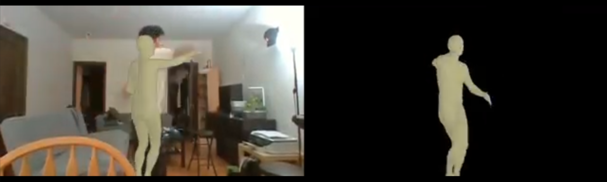

For this project, our initial plan was to translate human motions in in-the-wild videos into custom animation rigs. In the last few weeks, we were able to set up our local environments to run the state-of-the-art 3D human pose estimator (VIBE, Video Inference for Human Body Pose and Shape Estimation) on our own input videos. The preliminary results video is included in the presentation, but a snapshot of the video is included below.
In all honesty, we have not made as much progress as we would have preferred; although we expected that we would have difficulty setting up the required code environments in the given time frame, many of our hand-picked video-to-pose options from our proposal fell through because we lacked access to datasets and hardware for initial training (e.g., GPUs).
In the next few days, we plan on converting VIBE’s output (a Python pickle file (pkl) including motion capture data) to what is acceptable by the work in Skeleton-Aware Networks for Deep Motion Retargeting (.bvh file). We expect this to take a non-negligible amount of time, since there exists a number of conversions that need to occur (e.g., .pkl (VIBE output) → .gltf (blender-compatible file) → .bvh (motion capture file)). We expect to take the most time on making sure that the motion remapping works as intended, since the motion remapping paper states that it currently cannot map skeletons that are not homeomorphic (e.g., gorilla to dog). This introduces the possibility that we may also have to preprocess the bvh file to include/remove auxiliary bones, or at the least figure out a way to check whether a given animation rig will work for a given video. Finally, although we plan to map our motions to Shrek, we can only hope that we look and function similar enough to Shrek that our motions can be safely remapped.